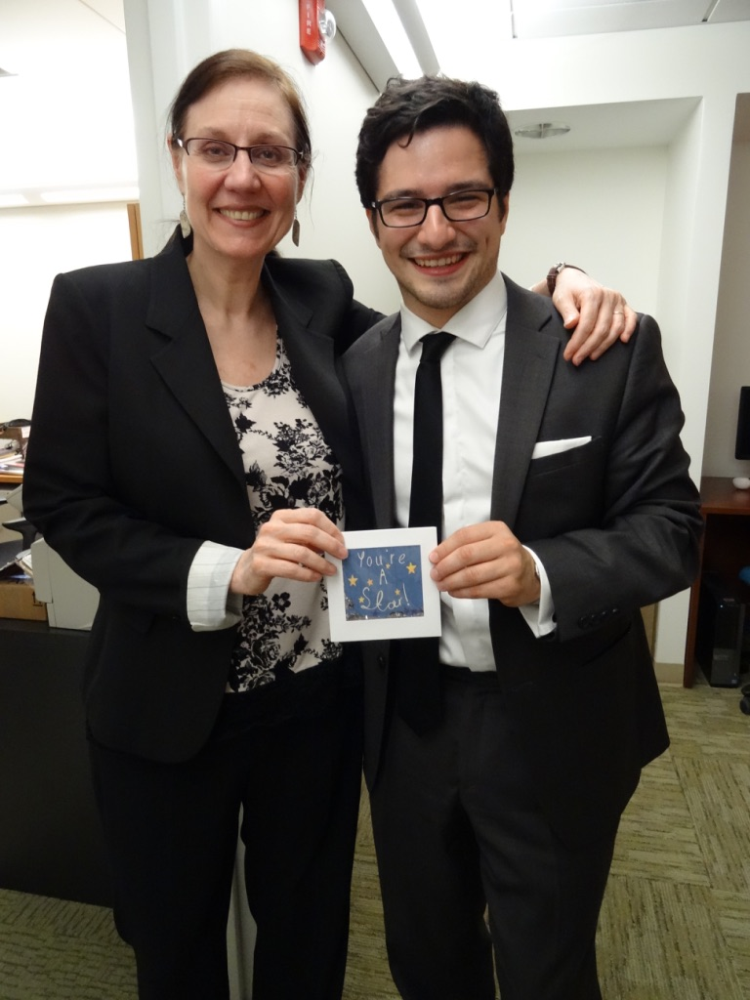

Collaborators
Mentors and colleagues I work with.

Valerie Reyna
Lois and Melvin Tukman Professor of Human Development, Cornell University
Her research integrates brain and behavioral approaches to understand and improve judgment, decision making, and memory across the life span. She is a developer of fuzzy-trace theory, a model of the relation between mental representations and decision making that has been widely applied in law, medicine, and public health.
Laboratory for Rational Decision Making (Dr. Reyna’s lab)
James Bjork
Associate Professor of Psychiatry, Virginia Commonwealth University School of Medicine
Dr. Bjork is also affiliated with the Institute for Drug and Alcohol Studies and is a neuroscientist for the Department of Veterans Affairs. His research interests include psychopharmacology and traumatic brain injury and drug abuse in military and other populations. He has authored dozens of peer-reviewed behavioral and neuroimaging papers on human impulsivity and aggression, and is a frequent speaker to lay and professional audiences about the motivational neurocircuitry of addiction and the at-risk brain.
Dr. Bjork’s laboratory website